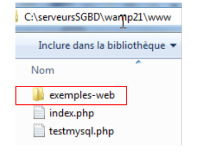
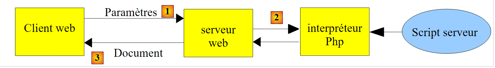
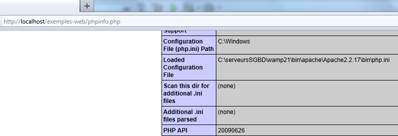

10. PHP Servidores
Dado que los programas PHP pueden ser ejecutados por un servidor web, dicho programa se convierte en un programa del lado del servidor capaz de servir a múltiples clientes. Desde la perspectiva del cliente, llamar a un servicio web equivale a solicitar el URL de ese servicio. El cliente puede estar escrito en cualquier lenguaje, incluido el PHP. En este último caso, utilizamos las funciones de red que acabamos de comentar. También necesitamos saber cómo "comunicarnos" con un servicio web, es decir, entender el HTTP protocolo utilizado para la comunicación entre un servidor web y sus clientes. Este es el propósito de los siguientes programas.
El cliente web descrito en la sección 9.2 nos permitió explorar parte del protocolo HTTP.

En su forma más simple, los intercambios cliente/servidor son los siguientes:
- el cliente abre una conexión al puerto 80 del servidor web
- solicita un documento
- el servidor web envía el documento solicitado y cierra la conexión
- el cliente cierra la conexión
El cliente puede adoptar diversas formas: HTML un texto, una imagen, un vídeo, etc. Puede ser un documento existente (documento estático) o un documento generado sobre la marcha por un script (documento dinámico). En este último caso, nos referimos a la programación web. El script para generar dinámicamente los documentos puede estar escrito en varios lenguajes: PHP, Python, Perl, Java, Ruby, C#, VB.NET, etc.
Aquí, utilizamos PHP para generar dinámicamente documentos de texto.
 |
- En [1], el cliente establece una conexión con el servidor, solicita un script PHP, y puede o no enviar parámetros a ese script
- En [2], el servidor web ejecuta el script PHP utilizando el intérprete PHP. Este script genera un documento que se envía al cliente [3]
- El servidor cierra la conexión. El cliente hace lo mismo.
El servidor web puede gestionar varios clientes a la vez. Con el paquete de software WampServer, el servidor web es un servidor Apache, un servidor de código abierto de la Fundación Apache (http://www.apache.org/). En las siguientes aplicaciones, se debe lanzar WampServer. Esto activa tres componentes: el servidor web Apache, el sistema de gestión de bases de datos MySQL y el intérprete PHP.
Los scripts ejecutados por el servidor web se escribirán utilizando la herramienta NetBeans. Hasta ahora, hemos escrito scripts PHP ejecutados en un entorno de consola:
 |
El usuario utiliza la consola para solicitar la ejecución de un script PHP y recibir los resultados.
En las aplicaciones cliente/servidor que siguen,
- el script cliente se ejecuta en un entorno de consola
- el script del servidor se ejecuta en un entorno web
 |
El script PHP del servidor no puede ubicarse en cualquier lugar del sistema de archivos. Esto se debe a que el servidor web busca los documentos estáticos y dinámicos que se le solicitan en ubicaciones especificadas por la configuración. La configuración por defecto de WampServer hace que los documentos se busquen en el directorio <WampServer>/www donde <WampServer> es la carpeta de instalación de WampServer. Así, si un cliente web solicita un documento D con el URL [http://localhost/D], el servidor web servirá el documento D ubicado en la ruta [<WampServer>/www/D].
En los siguientes ejemplos, colocaremos los scripts de servidor en la carpeta [www/web-examples]. Si un script de servidor se llama S.php, se solicitará al servidor web utilizando el URL [http://localhost/exemples-web/S.php]. El documento [<WampServer>/www/web-examples/S.php...] se servirá a continuación.
 |
Para crear un script del lado del servidor con NetBeans , procederemos como sigue:
 |
- En [1], creamos un nuevo proyecto
- En [2], seleccionamos la categoría [PHP] y el proyecto [PHP Aplicación
 |
- en [3], denominamos el proyecto
- En [4], elegimos una carpeta para el proyecto
- En [5], especificamos que el script debe ser ejecutado por un servidor web local (el URL del script tendrá la forma http://localhost/...). El servidor web local será el servidor web Apache de WampServer.
- En [6], especificamos el URL del proyecto. Aquí, decidimos que un script llamado S.php en el proyecto será accedido a través del URL [http://localhost/exemples-web/S.php]. Basado en lo anterior, esto significa que la ruta al script S.php en el sistema de archivos será [<WampServer>/www/web-examples/S.php]. Esto es lo que se especifica en [7]. Aquí, especificamos que cualquier script S.php en el proyecto debe ser copiado en la estructura de directorios del servidor web Apache.
- en [8], el nuevo proyecto.
Escribamos un script de prueba:
 |
- En [1], creamos un primer script PHP en el proyecto [web-examples]
- En [2], le damos un nombre
- en [3], después de crearlo, le damos el siguiente contenido
Next, WampServer must be running.
 |
- En [4], ejecutamos el script web [example1.php]. a continuación, NetBeans iniciará el navegador predeterminado de la máquina y le indicará que muestre el URL [http://localhost/exemples-web/exemple1.php] [5]
- En [6], el navegador muestra lo que el script del servidor envió al cliente.
En adelante, nos encontraremos con dos tipos de clientes web:
- un navegador como se ha descrito anteriormente. Observamos que el servidor web envía una respuesta en forma: HTTP encabezados, línea en blanco, texto. El navegador sólo muestra el texto.
- un script PHP que mostrará la respuesta completa: HTTP encabezados, línea en blanco, texto.
Seguir adelante,
- los scripts del lado del servidor se escribirán como [example1.php] arriba
- los scripts del lado del cliente se escribirán como los scripts de consola que hemos escrito hasta ahora.
10.1. Aplicación cliente/servidor de fecha/hora
10.1.1. El servidor (web_01)
<?php
// time: number of milliseconds since 01/01/1970
// date-time display format
// d: day (2 digits)
// m: 2-digit month
// y: 2-digit year
// H: hour 0,23
// i: minutes
// s: seconds
print date("d/m/y H:i:s",time());
Básicamente, el script PHP anterior muestra la hora actual en la pantalla. Sin embargo, cuando es ejecutado por un servidor web, el flujo 1-que normalmente se asocia con la pantalla-es redirigido a la conexión que une el servidor con su cliente. Por lo tanto, en un contexto web, el script anterior envía la hora actual como texto al cliente.
Vamos a ejecutar este script dentro de NetBeans:
 |
- En [1], ejecutamos el script. A continuación, se inicia un navegador web.
- En [2], el URL solicitado por el navegador web
- En [3], el texto enviado por el script del servidor
El navegador del cliente utiliza el HTTP protocolo para comunicarse con el servidor web. Ya hemos descrito la estructura de este protocolo.
El cliente envía líneas de texto que pueden dividirse en tres partes: cabeceras HTTP, una línea en blanco y el documento. El documento enviado al servidor web suele estar vacío o consistir en un conjunto de parámetros de la forma parami=vali, donde vali es un valor introducido por el usuario en un formulario HTML.
La respuesta del servidor tiene la misma estructura: HTTP cabeceras, una línea en blanco y un documento, donde el documento es esta vez el documento solicitado por el navegador del cliente. Si el cliente ha enviado parámetros, el documento devuelto depende generalmente de esos parámetros.
Con el Firefox navegador, puede ver los datos reales intercambiados entre el cliente y el servidor web. Existe un Firefox plugin llamado Firebug que permite realizar un seguimiento de este intercambio de datos. Firebug está disponible en URL [https://addons.mozilla.org/fr/firefox/addon/firebug/]. Si utiliza el Firefox navegador para visitar este URL, puede descargar el Firebug plugin. En lo sucesivo supondremos que se ha descargado e instalado el plugin Firebug. Es accesible a través de una opción en el menú de Firefox:
 |
Se abre una ventana de Firebug dentro de la ventana del navegador Firefox. Esta ventana a su vez tiene un menú:
 |
Para ver los intercambios cliente/servidor durante una petición HTTP, introducimos el URL [http://localhost/exemples-web/web_01.php] en el navegador Firefox. A continuación, la ventana de Firebug se llena de información:
 |
Arriba se resumen los intercambios cliente/servidor:
- [1]: El cliente envió la petición HTTP: GET /exemples-web/web_01.php HTTP/1.1 solicitar el documento [web01.php]
- [2]: El servidor envió la respuesta: HTTP/1.1 200 OK, indicando que ha encontrado el documento solicitado.
Firebug le permite ver los intercambios completos. Basta con "expandir" el URL:
 |
Arriba vemos las cabeceras HTTP intercambiadas entre el cliente (Request) y el servidor (Response). Es posible obtener el código fuente del intercambio, i.e, las líneas reales de texto intercambiadas [1]. Obtenemos entonces el siguiente código fuente:
 |
Para escribir un script del lado del cliente para el servidor web, simplemente necesitamos replicar el comportamiento del navegador. Después de establecer una conexión con el servidor, el script del lado del cliente podría enviar las 8 líneas de la petición mostrada arriba. De hecho, no todo es esencial, y sólo enviaremos las tres líneas siguientes:
- Línea 1: especifica el documento solicitado y el protocolo HTTP utilizado
- Línea 2: proporciona el nombre de host del script cliente
- línea 3: indica que tras el intercambio, el cliente cerrará la conexión con el servidor
Veamos ahora la respuesta del servidor. Sabemos que fue generada por el script PHP [web_01.php]. Arriba, vemos las cabeceras HTTP de la respuesta. El código del script [web01.php] muestra que no las generó. Recordemos la configuración del script del servidor:
 |
Es el servidor web el que genera las cabeceras HTTP de la respuesta. El script del servidor puede generarlos por sí mismo. Veremos un ejemplo de esto un poco más adelante.
Hemos mencionado que la respuesta del servidor web toma la forma: HTTP cabeceras, línea en blanco, documento. Si el documento es de texto, podemos verlo en la pestaña [Respuesta] de Firebug:
 |
Esta respuesta ha sido generada por el script [web_01.php].
10.1.2. Un cliente (client1_web_01)
Ahora escribiremos un script cliente para el servicio anterior. Sabemos que el cliente debe:
- abrir una conexión con el servidor web
- envía el texto: HTTP cabeceras, línea en blanco
- leer la respuesta completa del servidor hasta que éste cierre su conexión con el cliente
- cerrar la conexión con el servidor
El script cliente se ejecuta en un entorno de consola NetBeans:
 |
- en [1], el script cliente [client1_web_01.php] está incluido en el proyecto NetBeans [ejemplos]
- en [2], las propiedades del proyecto NetBeans [ejemplos]
- en [3], el proyecto NetBeans [ejemplos] se ejecuta en modo "línea de comandos", que también hemos denominado modo "consola".
El código del script cliente es el siguiente:
1. <?php
2.
3. // data
4. $HOST = "localhost";
5. $PORT = 80;
6. $serverUrl = "/web-examples/web_01.php";
7. // Open a connection on port 80 of $HOST
8. $connection = fsockopen($HOST, $PORT);
9. // Error?
10. if (!$connection) {
11. print "Error: $error\n";
12. exit;
13. }
14. // HTTP headers must end with a blank line
15. // GET
16. fputs($connection, "GET $urlServer HTTP/1.1\n");
17. // Host
18. fputs($connection, "Host: localhost\n");
19. // Connection
20. fputs($connection, "Connection: close\n");
21. // blank line
22. fputs($connection, "\n");
23. // The server will now respond on the $connection channel. It will send all
24. // its data and then close the channel. The client therefore reads everything coming from $connection
25. // until the channel closes
26. while ($line = fgets($connection, 1000)) {
27. print "$line";
28. }//while
29. // the client closes the connection in turn
30. fclose($connection);
31. // end
32. exit;
Comentarios
- línea 8: abrir una conexión con el servidor
- línea 16: HTTP GET comando
- línea 18: HTTP Comando host
- línea 20: HTTP Comando de conexión
- línea 22: línea vacía
- Líneas 26-28: Lee todas las líneas de texto enviadas por el servidor hasta que éste cierra la conexión.
- línea 30: el cliente cierra la conexión
La ejecución del script cliente produce los siguientes resultados:
1. HTTP/1.1 200 OK
2. Date: Wed, 17 Aug 2011 13:35:00 GMT
3. Server: Apache/2.2.17 (Win32) PHP/5.3.5
4. X-Powered-By: PHP/5.3.5
5. Content-Length: 17
6. Connection: close
7. Content-Type: text/html
8.
9. 08/17/11 1:35:00 PM
Comentarios
- Líneas 1-7: la respuesta HTTP del servidor web.
- Línea 8: la línea vacía que señala el final de las cabeceras HTTP
- Líneas 9 y siguientes: el documento. Aquí, es un simple texto que representa la fecha y hora actuales. Este es el texto escrito por el script PHP a la salida #1.
- Línea 1: El servidor responde que ha encontrado el documento solicitado.
- Línea 2: fecha y hora actuales del servidor
- Línea 3: Identidad del servidor web
- línea 4: indica que el documento que sigue es generado por un script PHP
- línea 5: número de caracteres del documento
- Línea 6: El servidor indica que después de enviar el documento, cerrará la conexión
- línea 7: indica que el documento enviado por el servidor es texto en formato HTML. Esto es incorrecto. El documento es texto sin formato. Cuando el documento no está en formato HTML, corresponde al script PHP indicarlo. Aquí no lo hemos hecho.
10.1.3. Un segundo cliente (client2_web_01)
El cliente anterior mostraba todo lo que el servidor web le enviaba. En la práctica, generalmente ignoramos las cabeceras HTTP de la respuesta y nos centramos en el cuerpo del documento. En este caso, queremos recuperar la fecha y la hora enviadas por el script PHP del lado del servidor. Recuperaremos esta información utilizando una expresión regular.
1. <?php
2.
3. // retrieve information sent by a web server
4. // data
5. $HOST = "localhost";
6. $PORT = 80;
7. $serverUrl = "/web-examples/web_01.php";
8. // Open a connection on port 80 of $HOST
9. $connection = fsockopen($HOST, $PORT);
10. // Error?
11. if (!$connection) {
12. print "Error: $error\n";
13. exit;
14. }
15. // HTTP headers must end with a blank line
16. // GET
17. fputs($connection, "GET $urlServer HTTP/1.1\n");
18. // Host
19. fputs($connection, "Host: localhost\n");
20. // Connection
21. fputs($connection, "Connection: close\n");
22. // blank line
23. fputs($connection, "\n");
24. // The server will now respond on the $connection channel. It will send all
25. // this data and then close the channel. The client therefore reads everything coming from $connection
26. // until it finds the line it is looking for in the format dd/mm/yy hh:mm:ss
27. while ($line = fgets($connection, 1000)) {
28. print "$line";
29. if (preg_match("/(\d\d)\/(\d\d)\/(\d\d) (\d\d):(\d\d):(\d\d)/", $line, $fields)) {
30. // retrieve the # fields
31. array_shift($fields); // remove the first element from the $fields array
32. // Retrieve the 6 fields into 6 variables
33. list($j, $m, $a, $h, $i, $s) = $fields;
34. // display result
35. print "\ndate_time=[$j,$m,$a,$h,$i,$s]\n";
36. }//if
37. }//while
38. // the client closes the connection in turn
39. fclose($connection);
40. // end
41. exit;
1. HTTP/1.1 200 OK
2. Date: Wed, 17 Aug 2011 14:14:51 GMT
3. Server: Apache/2.2.17 (Win32) PHP/5.3.5
4. X-Powered-By: PHP/5.3.5
5. Content-Length: 17
6. Connection: close
7. Content-Type: text/html
8.
9. 08/17/11 2:14:51 PM
10. date-time=[08/17/11 14:14:51]
10.2. Recuperación por el servidor de los parámetros enviados por el cliente
En el protocolo HTTP, un cliente dispone de dos métodos para pasar parámetros al servidor web:
- solicita el servicio URL de la forma
GET url?param1=val1¶m2=val2¶m3=val3… HTTP/1.0
donde el válido deben codificarse primero para que ciertos caracteres reservados sean sustituidos por sus valores hexadecimales.
- solicita el servicio URL de la forma
POST url HTTP/1.0
entonces, entre las cabeceras HTTP enviadas al servidor, incluye la siguiente cabecera:
El resto de las cabeceras enviadas por el cliente terminan con una línea en blanco. A continuación, puede enviar sus datos de la forma
donde el válido deben, como en el caso del método GET, codificarse previamente. El número de caracteres enviados al servidor debe ser N, donde N es el valor declarado en la cabecera
El script PHP que recupera el anterior parami enviados por el cliente obtienen sus valores de la matriz:
- $_GET[""parami"] para una solicitud GET
- $_POST[""parami"] para una solicitud POST
10.2.1. El cliente GET (client1_web_02)
El siguiente script PHP envía tres parámetros [last_name, first_name, age] al servidor.
1. <?php
2.
3. // client: sends first_name, last_name, age to the server using the GET method
4. // data
5. $HOST = "localhost";
6. $PORT = 80;
7. $URL = "/web-examples/web_02.php";
8. list($first_name, $last_name, $age) = array("jean-paul", "de la hûche", 45);
9. // connect to the web server
10. $connection = fsockopen($HOST, $PORT);
11. // return if error
12. if (!$connection) {
13. print "Failed to connect to the site ($HOST, $PORT): $error";
14. exit;
15. }//if
16. // send information to the PHP server
17. // encode the information
18. $info = "first_name=" . urlencode(utf8_decode($first_name)) . "&last_name=" . urlencode(utf8_decode($last_name)) . "&age=" . urlencode("$age");
19. // console log
20. print "info sent to the server (GET)=$info\n";
21. print "Requested URL=[$URL?$info]\n\n";
22. // HTTP headers must end with an empty line
23. // GET
24. fputs($connection, "GET $URL?$info HTTP/1.1\n");
25. // Host
26. fputs($connection, "Host: localhost\n");
27. // Connection
28. fputs($connection, "Connection: close\n");
29. // empty line
30. fputs($connection, "\n");
31. // The server will now respond on the $connection channel. It will send all
32. // its data and then close the channel. The client reads everything coming from $connection until the channel is closed
33. while ($line = fgets($connection, 1000))
34. print "$line";
35. // the client closes the connection in turn
36. fclose($connection);
Comentarios
- línea 7: URL del script del servidor
- línea 8: valores de los 3 parámetros
- línea 10: abre una conexión con el servidor web
- línea 18: codificación de los 3 parámetros. Estamos trabajando en un script escrito en NetBeans con codificación de caracteres UTF-8. Por lo tanto, los 3 valores de los parámetros de la línea 8 están codificados en UTF-8. La función utf8_decode convierte su codificación a ISO-8859-1. Una vez hecho esto, se pueden codificar para la función URL. Todos los caracteres no alfabéticos se sustituyen por %xx, donde xx es el valor hexadecimal del carácter. Los espacios se sustituyen por el signo +.
- Línea 24: El URL solicitado es $URL?$infos, donde $infos tiene la forma last_name=val1&first_name=val2&age=val3.
10.2.2. El servidor (web_02)
El servidor simplemente muestra lo que recibe.
1. <?php
2.
3. // error handling
4. ini_set("display_errors", "off");
5.
6. // server retrieval of information sent by the client
7. // here first_name=P&last_name=N&age=A
8. // this information is automatically available in the variables
9. // $_GET['first_name'], $_GET['last_name'], $_GET['age']
10. // we send them back to the client
11.
12. // UTF-8 header
13. header("Content-Type: text/plain; charset=utf-8");
14.
15. // parameters sent to the server
16. $first_name = isset($_GET['first_name']) ? $_GET['first_name'] : "";
17. $lastName = isset($_GET['lastName']) ? $_GET['lastName'] : "";
18. $age = isset($_GET['age']) ? $_GET['age'] : "";
19.
20. // response to the client
21. $response = "information received from the client [" .
22. utf8_encode(htmlspecialchars($first_name, ENT_QUOTES)) .
23. "," . utf8_encode(htmlspecialchars($last_name, ENT_QUOTES)) .
24. "," . utf8_encode(htmlspecialchars($age, ENT_QUOTES)) . "]\n";
25. print $response;
Comentarios
- línea 13: establece la cabecera HTTP "Content-Type". Por defecto, el servidor web envía la cabecera
, que indica que la respuesta es texto en formato HTML. En este caso, la respuesta será texto sin formato con caracteres codificados en UTF-8:
las cabeceras HTTP deben enviarse antes de la respuesta del servidor. Por lo tanto, en el código anterior, la llamada al método cabecera debe preceder a cualquier función imprimir declaraciones.
- Líneas 16-18: Recuperamos los tres parámetros de la matriz $_GET.
- Línea 21: Construimos la cadena que se enviará como respuesta al cliente. Ciertos caracteres tienen significados especiales en HTML y deben ser reemplazados por entidades HTML para ser mostrados. htmlspecialchars($cadena) sustituye todos estos caracteres por sus equivalentes en el $cadena. Por ejemplo, el carácter $ se convierte en &. A continuación, puesto que en la línea 13 especificamos que la respuesta sería texto UTF-8, codificamos los valores recuperados en UTF-8.
- Línea 25: Se envía la respuesta al cliente
Vamos a ejecutar el script [web_02] de NetBeans. Se abrirá entonces un navegador para mostrar el URL [http://localhost/exemples-web/web_02.php]:
 |
- En [1], el navegador muestra el URL [http://localhost/exemples-web/web_02.php]. Como no añadimos parámetros a este URL, el servidor respondió con parámetros vacíos. Recordemos que la respuesta del servidor es la que se escribe con la etiqueta imprimir declaración.
- En [2], añadimos parámetros al URL. Esta vez, el script del servidor los devuelve correctamente.
Tenga en cuenta que NetBeans no es necesario para ejecutar un script de servidor. Basta con introducir el URL del script de servidor en un navegador para ejecutarlo.
Prueba 2
Ejecutamos el cliente [client1_web_02.php] en NetBeans. Recibimos la siguiente respuesta:
1. information sent to the server (GET)=first_name=jean-paul&last_name=de+la+h%FBche&age=45
2. Requested URL=[/web-examples/web_02.php?first_name=jean-paul&last_name=de+la+h%FBche&age=45]
3.
4. HTTP/1.1 200 OK
5. Date: Wed, 17 Aug 2011 14:31:01 GMT
6. Server: Apache/2.2.17 (Win32) PHP/5.3.5
7. X-Powered-By: PHP/5.3.5
8. Content-Length: 59
9. Connection: close
10. Content-Type: text/plain; charset=utf-8
11.
12. information received from the client [jean-paul,de la hûche,45]
- Línea 1: Codificación de los 3 parámetros. Podemos ver que el carácter û se ha convertido en %FB.
- línea 12: respuesta del servidor
10.2.3. El cliente POST (client2_web_03)
Un cliente HTTP envía la siguiente secuencia de texto al servidor web: HTTP cabeceras, línea en blanco, documento. En el cliente anterior, esta secuencia era la siguiente:
No había ningún documento. Existe otra forma de transmitir parámetros, conocida como método POST. En este caso, la secuencia de texto enviada al servidor web es la siguiente:
Esta vez, los parámetros que se incluyeron en las cabeceras HTTP para el cliente GET forman parte del documento enviado después de las cabeceras en el cliente POST.
El script cliente POST es el siguiente:
1. <?php
2.
3. // client: sends first_name, last_name, age to the server using the POST method
4. // data
5. $HOST = "localhost";
6. $PORT = 80;
7. $URL = "/web-examples/web_03.php";
8. list($first_name, $last_name, $age) = array("jean-paul", "de la hûche", 45);
9. // connect to the web server
10. $connection = fsockopen($HOST, $PORT);
11. // return if error
12. if (!$connection) {
13. print "Failed to connect to the site ($HOST, $PORT): $error";
14. exit;
15. }//if
16. // send information to the PHP server
17. // we encode the information
18. $info = "first_name=" . urlencode(utf8_decode($first_name)) . "&last_name=" . urlencode(utf8_decode($last_name)) . "&age=" . urlencode("$age");
19. print "client: info sent to the server (POST): $infos\n";
20. // We connect to the URL $URL by posting (POST) parameters to it
21. // HTTP headers must end with an empty line
22. // POST
23. fputs($connection, "POST $URL HTTP/1.1\n");
24. // Host
25. fputs($connection, "Host: localhost\n");
26. // Connection
27. fputs($connection, "Connection: close\n");
28. // Content-type
29. fputs($connection, "Content-type: application/x-www-form-urlencoded\n");
30. // Content-length
31. // Send the size (number of characters) of the data to be sent
32. fputs($connection, "Content-length: " . strlen($info) . "\n");
33. // Send an empty line
34. fputs($connection, "\n");
35. // Send the data
36. fputs($connection, $data);
37. // The server will now respond on the $connection channel. It will send all
38. // its data and then close the channel. The client reads everything coming from $connection
39. // until the channel closes
40. while ($line = fgets($connection, 1000))
41. print "$line";
42. // The client closes the connection in turn
43. fclose($connection);
Comentarios
- Línea 7: El URL del servicio web al que se conectará el cliente POST. Este servicio web se describirá en breve.
- Línea 8: los parámetros que se enviarán al servicio web
- Línea 10: Conexión con el servidor web
- línea 18: codificación de los parámetros que se enviarán al servicio web
- línea 23: HTTP POST comando
- línea 25: HTTP Comando host
- línea 27: HTTP Cabecera de conexión
- línea 29: HTTP Tipo de contenido encabezado. Ya nos hemos encontrado con esta cabecera HTTP. Está presente cada vez que se envía un documento. Un servidor web que envía un documento HTML utiliza la cabecera HTTP
If it sends unformatted text, it uses the HTTP header
Nuestro cliente POST envía un documento que es texto de la forma param1=val1¶m2=val2&.... Este tipo de documento tiene el tipo application/x-www-form-urlencoded. No explicaremos por qué, ya que para ello tendríamos que explicar qué es un formulario web.
- Línea 32: Longitud del contenido directiva. Ya nos hemos encontrado con esta cabecera HTTP. Está presente cada vez que se envía un documento. Indica el número de bytes del documento.
- Línea 34: La línea vacía que indica el final de las cabeceras HTTP
- Línea 36: Envío de los parámetros
- Líneas 40-41: Lectura de la respuesta completa del servidor
- Línea 43: Cierre de la conexión
10.2.4. El servidor (web_03)
El servicio web [web_03] hace lo mismo que el servicio web [web_02]. Lee los parámetros enviados por el cliente POST y los devuelve al cliente. Su código es el siguiente:
1. <?php
2.
3. // error handling
4. ini_set("display_errors", "off");
5. // UTF-8 header
6. header("Content-Type: text/plain; charset=utf-8");
7.
8. // Server retrieval of information sent by the client
9. // here first_name=P&last_name=N&age=A
10. // this information is automatically available in the variables
11. // $_POST['first_name'], $_POST['last_name'], $_POST['age']
12. // we send them back to the client
13. // parameters sent to the server
14. $firstName = isset($_POST['firstName']) ? $_POST['firstName'] : "";
15. $lastName = isset($_POST['lastName']) ? $_POST['lastName'] : "";
16. $age = isset($_POST['age']) ? $_POST['age'] : "";
17. // response to the client
18. $response = "information received from the client [" .
19. utf8_encode(htmlspecialchars($first_name, ENT_QUOTES)) .
20. "," . utf8_encode(htmlspecialchars($last_name, ENT_QUOTES)) .
21. "," . utf8_encode(htmlspecialchars($age, ENT_QUOTES)) . "]\n";
22. print $response;
Comentarios
- líneas 14-16: Los parámetros enviados por un cliente POST pasan a estar disponibles en el array $_POST para el servicio web que los recibe.
- línea 6: HTTP Tipo de contenido cabecera. Le sorprenderá no encontrar el HTTP Contenido-Longitud en las cabeceras HTTP, que indica el tamaño del documento enviado de vuelta al cliente. Hemos visto que el servidor web envía cabeceras HTTP por defecto. La dirección Contenido-Longitud header es uno de ellos.
Una vez escrito el script del servidor en NetBeans, estará disponible inmediatamente a través del servidor Apache WampServer. Recuerde que esto se consigue mediante la configuración (véase el párrafo 10). Lanzamos el cliente, que consulta al servidor, y recibimos la siguiente respuesta:
1. client: information sent to the server (POST): first_name=jean-paul&last_name=de+la+h%FBche&age=45
2. HTTP/1.1 200 OK
3. Date: Sat, 20 Aug 2011 12:55:19 GMT
4. Server: Apache/2.2.17 (Win32) PHP/5.3.5
5. X-Powered-By: PHP/5.3.5
6. Content-Length: 59
7. Connection: close
8. Content-Type: text/plain; charset=utf-8
9.
10. information received from the client [jean-paul,de la hûche,45]
- líneas 2-10: respuesta del servidor
- líneas 2-8: las cabeceras HTTP
- línea 10: el documento
- línea 6: el HTTP Contenido-Longitud encabezado. Como esta cabecera no fue generada por el script del servidor, fue generada por el servidor web.
- Línea 8: la única cabecera generada por el script del servidor
10.3. Recuperación de variables de entorno del servidor web
Un script de servidor se ejecuta en un entorno web al que puede acceder. Este entorno se almacena en el diccionario $_SERVER. En primer lugar, escribimos una aplicación de servidor que envía el contenido de este diccionario a sus clientes.
10.3.1. El servidor (web_04)
1. <?php
2.
3. // error handling
4. ini_set("display_errors", "off");
5. // UTF-8 header
6. header("Content-Type: text/plain; charset=utf-8");
7.
8. // Return the list of variables available in the server environment to the client
9. foreach ($_SERVER as $key => $value) {
10. print "[$key,$value]\n";
11. }
- Los pares (clave, valor) del diccionario $_SERVER se envían a los clientes.
El resultado obtenido cuando el cliente es un navegador web es el siguiente:

Aquí está el significado de algunas de las variables (para Windows. En Linux, serían diferentes):
CMDE representa la cabecera HTTP enviada por el cliente. Tenemos acceso a todas estas cabeceras. | |
La ruta a los ejecutables en la máquina donde se ejecuta el script de servidor | |
La ruta al intérprete de comandos DOS | |
las extensiones de los archivos ejecutables | |
la carpeta de instalación de Windows | |
la firma del servidor web. Aquí no hay nada. | |
el tipo de servidor web | |
El nombre de Internet de la máquina del servidor web | |
el puerto de escucha del servidor web | |
la dirección IP de la máquina del servidor web | |
la dirección IP del cliente. En este caso, el cliente estaba en la misma máquina que el servidor. | |
el puerto de comunicación del cliente | |
la raíz del árbol de directorios de los documentos servidos por el servidor web | |
la dirección de correo electrónico del administrador del servidor web | |
la ruta completa del script del servidor | |
la versión del protocolo HTTP utilizada por el servidor web | |
el método HTTP utilizado por el cliente. Hay cuatro: GET, POST, PUT, DELETE | |
los parámetros enviados con una solicitud GET /url?parameters | |
El URL solicitado por el cliente. Si el navegador solicita el URL http://machine[:port]/uri, REQUEST_URI será uri | |
$_SERVER['SCRIPT_FILENAME'] = $_SERVER['DOCUMENT_ROOT'] . $_SERVER['SCRIPT_NAME'] |
10.3.2. El cliente (client1_web_04)
El cliente simplemente muestra todo lo que el servidor le envía.
1. <?php
2.
3. // data
4. $HOST = "localhost";
5. $PORT = 80;
6. $serverUrl = "/web-examples/web_04.php";
7. // Open a connection on port 80 of $HOST
8. $connection = fsockopen($HOST, $PORT);
9. // error?
10. if (!$connection) {
11. print "Error: $error\n";
12. exit;
13. }
14.
15. // Connect to the web server via a URL
16. // HTTP headers must end with a blank line
17. // GET
18. fputs($connection, "GET $serverUrl HTTP/1.1\n");
19. // Host
20. fputs($connection, "Host: localhost\n");
21. // Connection
22. fputs($connection, "Connection: close\n");
23. // blank line
24. fputs($connection, "\n");
25. // The server will now respond on the $connection channel. It will send all
26. // its data and then close the channel. The client therefore reads everything coming from $connection
27. // until the channel closes
28. while ($line = fgets($connection, 1000)) {
29. print "$line";
30. }//while
31. // the client closes the connection in turn
32. fclose($connection);
33. // end
34. exit;
1. HTTP/1.1 200 OK
2. Date: Sat, 20 Aug 2011 14:11:58 GMT
3. Server: Apache/2.2.17 (Win32) PHP/5.3.5
4. X-Powered-By: PHP/5.3.5
5. Content-Length: 1353
6. Connection: close
7. Content-Type: text/plain; charset=utf-8
8.
9. [HTTP_HOST,localhost]
10. [HTTP_CONNECTION,close]
11. [PATH,C:\Windows\system32;C:\Windows;C:\Windows\System32\Wbem;C:\Windows\System32\WindowsPowerShell\v1.0\;C:\Program Files\Microsoft SQL Server\90\Tools\binn\;...;]
12. [SystemRoot,C:\Windows]
13. [COMSPEC,C:\Windows\system32\cmd.exe]
14. [PATHEXT,.COM;.EXE;.BAT;.CMD;.VBS;.VBE;.JS;.JSE;.WSF;.WSH;.MSC]
15. [WINDIR,C:\Windows]
16. [SERVER_SIGNATURE,]
17. [SERVER_SOFTWARE,Apache/2.2.17 (Win32) PHP/5.3.5]
18. [SERVER_NAME,localhost]
19. [SERVER_ADDR,127.0.0.1]
20. [SERVER_PORT,80]
21. [REMOTE_ADDR,127.0.0.1]
22. [DOCUMENT_ROOT,C:/database_servers/wamp21/www/]
23. [SERVER_ADMIN,admin@localhost]
24. [SCRIPT_FILENAME,C:/DB-servers/wamp21/www/web-examples/web_04.php]
25. [REMOTE_PORT,54552]
26. [GATEWAY_INTERFACE,CGI/1.1]
27. [SERVER_PROTOCOL,HTTP/1.1]
28. [REQUEST_METHOD,GET]
29. [QUERY_STRING,]
30. [REQUEST_URI,/web-examples/web_04.php]
31. [SCRIPT_NAME,/web-examples/web_04.php]
32. [PHP_SELF,/web-examples/web_04.php]
33. [REQUEST_TIME,1313849518]
10.4. Gestión de sesiones web
En los ejemplos anteriores de cliente/servidor, el proceso era el siguiente:
- el cliente abre una conexión al puerto 80 del servidor web
- envía la secuencia de texto: HTTP cabecera, línea en blanco, [documento]
- en respuesta, el servidor envía una secuencia del mismo tipo
- el servidor cierra la conexión con el cliente
- el cliente cierra la conexión con el servidor
If the same client makes a new request to the web server shortly thereafter, a new connection is established between the client and the server. The server cannot tell whether the connecting client has visited before or if this is a first-time request. Between connections, the server “forgets” its client. For this reason, the HTTP protocol is said to be a stateless protocol. However, it is useful for the server to remember its clients. For example, if an application is secure, the client will send the server a username and password to authenticate itself. If the server "forgets" its client between connections, the client would have to authenticate itself with every new connection, which is not feasible.
Para rastrear a un cliente, el servidor procede de la siguiente manera: cuando un cliente hace una petición inicial, el servidor incluye un identificador en su respuesta, que el cliente debe devolver con cada petición posterior. Gracias a este identificador, único para cada cliente, el servidor puede reconocerlo. A continuación, puede mantener un registro para ese cliente en forma de archivo asociado de forma exclusiva con el identificador del cliente.
Técnicamente, funciona así:
- En la respuesta a un nuevo cliente, el servidor incluye la cabecera HTTP Set-Cookie: Clave=Identificador. Sólo lo hace en la primera solicitud.
- En las siguientes peticiones, el cliente enviará su identificador a través del HTTP Galleta cabecera: Clave=Identificador para que el servidor pueda reconocerlo.
Cabe preguntarse cómo sabe el servidor que se trata de un cliente nuevo y no de uno que vuelve. Es la presencia del HTTP Galleta en las cabeceras HTTP del cliente que se lo indica. Para un cliente nuevo, esta cabecera está ausente.
El conjunto de conexiones de un cliente determinado se denomina sesión.
10.4.1. El fichero de configuración
For session management to work correctly with PHP, you must verify that it is properly configured. On Windows, its configuration file is PHP.ini. Depending on the execution context (console, web), the [PHP.ini] configuration file must be located in different directories. To find these, use the following script:
Línea 4: El phpinfo() proporciona información sobre el intérprete PHP que ejecuta el script. En particular, devuelve la ruta al fichero de configuración [PHP.ini] que se está utilizando.
En un entorno de consola, obtendrá un resultado similar al siguiente:
1. …
2. Configuration File (PHP.ini) Path => C:\Windows
3. Loaded Configuration File => C:\serveursSGBD\wamp21\bin\PHP\php5.3.5\PHP.ini
4. Scan this dir for additional .ini files => (none)
5. Additional .ini files parsed => (none)
6. …
Línea 2: El archivo de configuración principal es c:\windows\PHP.ini
Línea 3: Un archivo de configuración secundario es C:\DBServers\wamp21\bin\PHP\php5.3.5\PHP.ini. Permite modificar determinadas opciones de configuración del fichero de configuración principal.
En un entorno web, se obtiene el siguiente resultado:

El archivo de configuración secundario aquí no es el mismo que en el entorno de consola. Es este último el que examinaremos. En este archivo, hay un sesión sección:
1. [Session]
2. session.save_handler = files
3. session.save_path = "C:/serveursSGBD/wamp21/tmp"
4. session.use_cookies = 1
5. session.use_only_cookies = 1
6. session.name = PHPSESSID
7. session.auto_start = 0
8. session.cookie_lifetime = 0
9. session.cookie_path = /
10. session.cookie_domain =
11. session.serialize_handler = PHP
12. session.cache_expire = 180
13. session.hash_function = 0
- Línea 1: Los datos de la sesión del cliente se guardan en un archivo
- línea 3: el directorio donde se guardan los datos de la sesión. Si este directorio no existe, no se notifica ningún error y la gestión de sesiones no funciona.
- Líneas 4-5: indican que la sesión ID es gestionada por el HTTP Set-Cookie y Galleta cabeceras
- línea 6: el Set-Cookie tendrá la forma siguiente Set-Cookie: PHPSESSID=session_id
- Línea 7: La sesión de cliente no se inicia automáticamente. El script del servidor debe solicitarla explícitamente utilizando el método session_start() función.
10.4.2. Servidor 1 (web_05)
La gestión de la sesión ID es transparente para un servicio web. Este identificador es gestionado por el servidor web. Un servicio web accede a la sesión del cliente a través del identificador session_start() . A partir de ese momento, el servicio web puede leer y escribir en la sesión del cliente a través de la matriz $_SESSION. El siguiente código demuestra la gestión de sesiones para tres contadores.
1. <?php
2.
3. // error handling
4. ini_set("display_errors", "off");
5. // UTF-8 header
6. header("Content-Type: text/plain; charset=utf-8");
7.
8. // start a session
9. session_start();
10. // set 3 variables in the session
11. if (!isset($_SESSION['N1'])) {
12. $_SESSION['N1'] = 0;
13. }
14. if (!isset($_SESSION['N2'])) {
15. $_SESSION['N2'] = 10;
16. }
17. if (!isset($_SESSION['N3'])) {
18. $_SESSION['N3'] = 100;
19. }
20. // increment the 3 variables
21. $_SESSION['N1']++;
22. $_SESSION['N2']++;
23. $_SESSION['N3']++;
24. // send information to the client
25. print "N1=".$_SESSION['N1']."\n";
26. print "N2=".$_SESSION['N2']."\n";
27. print "N3=".$_SESSION['N3']."\n";
28. // end of session
29. session_close();
- línea 9: inicio de una sesión cliente
- líneas 11-13: el array $_SESSION es un diccionario clave-valor. Los datos almacenados en este diccionario persisten a través de las peticiones del mismo cliente. Actúa como la memoria del cliente en el servidor.
- líneas 11-19: si los tres contadores N1, N2, N3 no están en la sesión, se añaden a ella.
- líneas 21-23: se incrementan en uno
- líneas 25-27: sus valores se envían al cliente
En la relación cliente/servidor, la gestión de la sesión del cliente en el servidor depende de ambas partes, el cliente y el servidor:
- el servidor se encarga de enviar un identificador al cliente en su primera solicitud
- el cliente es responsable de devolver este identificador con cada nueva solicitud. Si no lo hace, el servidor asumirá que se trata de un nuevo cliente y generará un nuevo identificador para una nueva sesión.
Resultados
Utilizamos un navegador web como cliente. Por defecto (en realidad, por configuración), el navegador devuelve al servidor los identificadores de sesión que éste le envía. A medida que se realizan peticiones, el navegador recibirá los tres contadores enviados por el servidor y verá cómo se incrementan sus valores.
 |
- En [1], la primera petición al servicio web [web_05]
- En [2], la tercera petición muestra que los contadores se incrementan. Los valores de los contadores se almacenan entre peticiones.
Utilicemos Firebug para ver las cabeceras HTTP intercambiadas entre el servidor y el cliente. Cerramos Firefox para finalizar la sesión actual con el servidor, lo volvemos a abrir y activamos Firebug. Solicitamos el servicio |web_05]:
 |
Arriba, vemos la sesión ID enviada por el servidor en su respuesta a la primera petición del cliente. Utiliza el HTTP Set-Cookie de cabeza.
Hagamos una nueva petición refrescando (F5) la página en el navegador web:
 |
Aquí observaremos dos cosas:
- El navegador devuelve el ID de sesión con el HTTP Galleta de cabeza.
- En su respuesta, el servicio web ya no incluye este identificador. Ahora es responsabilidad del cliente enviarlo con cada una de sus peticiones.
10.4.3. Cliente 1 (client1_web_05)
Ahora escribiremos un script del lado del cliente basado en el script anterior del lado del servidor. En su gestión de sesión, debe comportarse como el navegador web:
- En la respuesta del servidor a su primera petición, debe encontrar la sesión ID que el servidor le envía. Sabe que lo encontrará en el HTTP Set-Cookie de cabeza.
- For each subsequent request, it must send the identifier it received back to the server. It will do this using the HTTP Cookie header.
El código del cliente es el siguiente:
1. <?php
2.
3. // data
4. $HOST = "localhost";
5. $PORT = 80;
6. $serverUrl = "/web-examples/web_05.php";
7. // tests
8. $cookie = "";
9. for ($i = 0; $i < 5; $i++) {
10. list($error, $cookie, $N1, $N2, $N3) = connect($HOST, $PORT, $serverUrl, $cookie);
11. print "----------------------------\n";
12. print "client(error,cookie,N1,N2,N3)=[$error,$cookie,$N1,$N2,$N3]\n";
13. print "----------------------------\n";
14. }
15. // end
16. exit;
17.
18. function connect($HOST, $PORT, $serverUrl, $cookie) {
19. // connects the client to ($HOST, $PORT, $serverURL)
20. // sends the $cookie if it is not empty
21. // displays all lines received in response
22. // Open a connection on port 80 of $HOST
23. $connection = fsockopen($HOST, $PORT);
24. // error?
25. if (!$connection)
26. return array("Error connecting to the server ($HOST, $PORT)");
27. // Connect to $serverurl
28. // HTTP headers must end with an empty line
29. // GET
30. fputs($connection, "GET $serverURL HTTP/1.1\n");
31. // Host
32. fputs($connection, "Host: localhost\n");
33. // Connection
34. fputs($connection, "Connection: close\n");
35. // send the cookie if it is not empty
36. if ($cookie) {
37. fputs($connection, "Cookie: $cookie\n");
38. }//if
39. // send an empty line
40. fputs($connection, "\n");
41. // display the web server's response
42. // and make sure to retrieve any cookies and the Ni values
43. $N = "";
44. while ($line = fgets($connection, 1000)) {
45. print "$line";
46. // cookie - only on the first response
47. if (!$cookie) {
48. if (preg_match("/^Set-Cookie: (.*?)\s*$/", $line, $fields)) {
49. $cookie = $fields[1];
50. }
51. }
52. // value of N1
53. if (preg_match("/^N1=(.*?)\s*$/", $line, $fields))
54. $N1 = $fields[1];
55. // value of N2
56. if (preg_match("/^N2=(.*?)\s*$/", $line, $fields))
57. $N2 = $fields[1];
58. // value of N3
59. if (preg_match("/^N3=(.*?)\s*$/", $line, $fields))
60. $N3 = $fields[1];
61. }//while
62. // close the connection
63. fclose($connection);
64. // return
65. return array("", $cookie, $N1, $N2, $N3);
66. }
Comentarios
- líneas 3-16: el programa principal
- líneas 18-67: el conecte función
- Líneas 9-14: El cliente llama al servidor cinco veces y muestra los valores sucesivos de los contadores N1, N2 y N3. Si la sesión se gestiona correctamente, estos contadores deberían incrementarse en 1 con cada nueva petición.
- Línea 10: El conecte utiliza los parámetros `$HOTE`, `$PORT`, y `$urlServeur` para conectar al cliente con el servicio web. La dirección `$cookierepresenta la sesión ID. En la primera llamada, es una cadena vacía. En llamadas posteriores, es la sesión ID enviada por el servidor en respuesta a la primera llamada del cliente. La dirección conecta` devuelve los valores de los tres contadores `$N1`, `$N2`, `$N3`, la sesión ID `$cookie`, y cualquier error en `error`.
- Línea 18: El `conectado tiene las características de un cliente HTTP estándar. Sólo comentaremos las nuevas características.
- Líneas 30-40: Enviando cabeceras HTTP.
- Líneas 36-38: Si se conoce la sesión ID, se envía al servidor
- Líneas 44-66: tratamiento de todas las líneas de texto enviadas por el servidor
- Líneas 47-51: Si aún no se ha recuperado la sesión ID, se recupera de la HTTP Set-Cookie mediante una expresión regular.
- líneas 53-54: el contador N1 también se obtiene mediante una expresión regular
- líneas 56-57, 59-60: lo mismo para los contadores N2 y N3
- línea 63: Cerrar la conexión con el servidor.
- Línea 65: Los resultados se devuelven como una matriz.
La ejecución del script cliente hace que se muestre lo siguiente en la consola NetBeans:
1. HTTP/1.1 200 OK
2. Date: Sun, 21 Aug 2011 13:59:17 GMT
3. Server: Apache/2.2.17 (Win32) PHP/5.3.5
4. X-Powered-By: PHP/5.3.5
5. Set-Cookie: PHPSESSID=ohiqtkv7hu2b26kdshjtqms9p7; path=/
6. Expires: Thu, 19 Nov 1981 08:52:00 GMT
7. Cache-Control: no-store, no-cache, must-revalidate, post-check=0, pre-check=0
8. Pragma: no-cache
9. Content-Length: 18
10. Connection: close
11. Content-Type: text/plain; charset=utf-8
12.
13. N1=1
14. N2=11
15. N3=101
16. ----------------------------
17. client(error,cookie,N1,N2,N3)=[,PHPSESSID=ohiqtkv7hu2b26kdshjtqms9p7; path=/,1,11,101]
18. ----------------------------
19. HTTP/1.1 200 OK
20. Date: Sun, 21 Aug 2011 13:59:18 GMT
21. Server: Apache/2.2.17 (Win32) PHP/5.3.5
22. X-Powered-By: PHP/5.3.5
23. Expires: Thu, Nov 19, 1981 08:52:00 GMT
24. Cache-Control: no-store, no-cache, must-revalidate, post-check=0, pre-check=0
25. Pragma: no-cache
26. Content-Length: 18
27. Connection: close
28. Content-Type: text/plain; charset=utf-8
29.
30. N1=2
31. N2=12
32. N3=102
33. ----------------------------
34. client(error,cookie,N1,N2,N3)=[,PHPSESSID=ohiqtkv7hu2b26kdshjtqms9p7; path=/,2,12,102]
35. ----------------------------
36. HTTP/1.1 200 OK
37. Date: Sun, 21 Aug 2011 13:59:18 GMT
38. Server: Apache/2.2.17 (Win32) PHP/5.3.5
39. X-Powered-By: PHP/5.3.5
40. Expires: Thu, Nov 19, 1981 08:52:00 GMT
41. Cache-Control: no-store, no-cache, must-revalidate, post-check=0, pre-check=0
42. Pragma: no-cache
43. Content-Length: 18
44. Connection: close
45. Content-Type: text/plain; charset=utf-8
46.
47. N1=3
48. N2=13
49. N3=103
50. ----------------------------
51. client(error,cookie,N1,N2,N3)=[,PHPSESSID=ohiqtkv7hu2b26kdshjtqms9p7; path=/,3,13,103]
52. ----------------------------
53. HTTP/1.1 200 OK
54. Date: Sun, 21 Aug 2011 13:59:18 GMT
55. Server: Apache/2.2.17 (Win32) PHP/5.3.5
56. X-Powered-By: PHP/5.3.5
57. Expires: Thu, Nov 19, 1981 08:52:00 GMT
58. Cache-Control: no-store, no-cache, must-revalidate, post-check=0, pre-check=0
59. Pragma: no-cache
60. Content-Length: 18
61. Connection: close
62. Content-Type: text/plain; charset=utf-8
63.
64. N1=4
65. N2=14
66. N3=104
67. ----------------------------
68. client(error,cookie,N1,N2,N3)=[,PHPSESSID=ohiqtkv7hu2b26kdshjtqms9p7; path=/,4,14,104]
69. ----------------------------
70. HTTP/1.1 200 OK
71. Date: Sun, 21 Aug 2011 13:59:18 GMT
72. Server: Apache/2.2.17 (Win32) PHP/5.3.5
73. X-Powered-By: PHP/5.3.5
74. Expires: Thu, Nov 19, 1981 08:52:00 GMT
75. Cache-Control: no-store, no-cache, must-revalidate, post-check=0, pre-check=0
76. Pragma: no-cache
77. Content-Length: 18
78. Connection: close
79. Content-Type: text/plain; charset=utf-8
80.
81. N1=5
82. N2=15
83. N3=105
84. ----------------------------
85. client(error,cookie,N1,N2,N3)=[,PHPSESSID=ohiqtkv7hu2b26kdshjtqms9p7; path=/,5,15,105]
- Línea 5: En su primera respuesta, el servidor envía la sesión ID. En las respuestas siguientes, ya no lo envía.
- Es evidente que el servidor web conserva los valores de (N1, N2, N3) a través de las peticiones del cliente. Esto se denomina seguimiento de sesión.
Los dos ejemplos siguientes muestran que también se pueden guardar los valores de un array o de un objeto.
10.4.4. Servidor 2 (web_06)
El siguiente script de servidor demuestra que se puede almacenar un array o un diccionario en una sesión.
1. <?php
2.
3. // error handling
4. ini_set("display_errors", "off");
5. // UTF-8 header
6. header("Content-Type: text/plain; charset=utf-8");
7.
8. // start a session
9. session_start();
10. // save an array and a dictionary
11. // initialize or modify the array
12. if (isset($_SESSION['array'])) {
13. for ($i = 0; $i < count($_SESSION['array']); $i++) {
14. $_SESSION['array'][$i]++;
15. }
16. } else {
17. for ($i = 0; $i < 10; $i++) {
18. $_SESSION['array'][$i] = $i * 10;
19. }
20. }
21. // initialize or modify the dictionary
22. if (isset($_SESSION['dico'])) {
23. foreach (array_keys($_SESSION['dico']) as $key) {
24. $_SESSION['dico'][$key]++;
25. }
26. } else {
27. $_SESSION['dico'] = array("zero" => 0, "ten" => 10, "twenty" => 20);
28. }
29. // send information to the client
30. print "array=" . join(",", $_SESSION['array']) . "\n";
31. print "dico=";
32. foreach ($_SESSION['dico'] as $key => $value) {
33. print "($key, $value) ";
34. }
35. print "\n";
Comentarios
- líneas 17-19: se crea inicialmente un array si aún no existe
- líneas 12-15: si ya existe, sus elementos se incrementan en 1
- línea 27: se inicializa un diccionario con valores numéricos si aún no existe
- líneas 22-25: si ya está en la sesión, sus valores numéricos se incrementan en 1
- líneas 30-35: el array y el diccionario se envían al cliente
10.4.5. Cliente 2 (client1_web_06)
1. <?php
2.
3. // data
4. $HOST = "localhost";
5. $PORT = 80;
6. $serverUrl = "/web-examples/web_06.php";
7. // tests
8. $cookie = "";
9. for ($i = 0; $i < 5; $i++) {
10. connect($HOST, $PORT, $serverUrl, $cookie);
11. }
12. // end
13. exit;
14.
15. function connect($HOST, $PORT, $serverUrl, &$cookie) {
16. // connects the client to ($HOST, $PORT, $serverURL)
17. // sends the $cookie if it is not empty
18. // displays all lines received in response
19. // the cookie is passed by reference to be shared between
20. // the called program and the calling program
21. // Open a connection on port $PORT of $HOST
22. $connection = fsockopen($HOST, $PORT);
23. // error?
24. if (!$connection)
25. return array("Error connecting to the server ($HOST, $PORT)");
26. // HTTP headers must end with an empty line
27. // GET
28. fputs($connection, "GET $serverURL HTTP/1.1\n");
29. // Host
30. fputs($connection, "Host: localhost\n");
31. // Connection
32. fputs($connection, "Connection: close\n");
33. // send the cookie if it is not empty
34. if ($cookie) {
35. fputs($connection, "Cookie: $cookie\n");
36. }
37. // send an empty line
38. fputs($connection, "\n");
39. // display the web server's response
40. // and make sure to retrieve any cookie
41. while ($line = fgets($connection, 1000)) {
42. print "$line";
43. // cookie - only on the first response
44. if (!$cookie) {
45. if (preg_match("/^Set-Cookie: (.*?)\s*$/", $line, $fields)) {
46. $cookie = $fields[1];
47. }
48. }
49. }
50. // Close the connection
51. fclose($connection);
52. // return
53. return "";
54. }
El código del cliente es similar al código del cliente ya comentado.
1. HTTP/1.1 200 OK
2. ...
3. Set-Cookie: PHPSESSID=6lvttr0uhpj5q3sl91h4h7p322; path=/
4. ...
5.
6. array=0,10,20,30,40,50,60,70,80,90
7. dico=(zero,0) (ten,10) (twenty,20)
8.
9. HTTP/1.1 200 OK
10. ...
11.
12. array=1,11,21,31,41,51,61,71,81,91
13. dico=(zero,1) (ten,11) (twenty,21)
14.
15. HTTP/1.1 200 OK
16. ...
17.
18. array=2,12,22,32,42,52,62,72,82,92
19. dico=(zero,2) (ten,12) (twenty,22)
20.
21. HTTP/1.1 200 OK
22. ...
23.
24. array=3,13,23,33,43,53,63,73,83,93
25. dico=(zero,3) (ten,13) (twenty,23)
26.
27. HTTP/1.1 200 OK
28. ...
29.
30. array=4,14,24,34,44,54,64,74,84,94
31. dico=(zero,4) (ten,14) (twenty,24)
10.4.6. Servidor 3 (web_07)
El siguiente script de servidor muestra que se puede almacenar un objeto en una sesión.
1. <?php
2.
3. // error handling
4. ini_set("display_errors", "off");
5. // UTF-8 header
6. header("Content-Type: text/plain; charset=utf-8");
7.
8. // start a session
9. session_start();
10. // initialize or modify a Person object
11. if (isset($_SESSION['person'])) {
12. $person = $_SESSION['person'];
13. // increment the age
14. $person = $_SESSION['person'];
15. } else {
16. // define the person
17. $_SESSION['person'] = new Person("paul", "langévin", 10);
18. }
19. // display to the client
20. print "person=".$_SESSION['personne']."\n";
21. // end
22. exit;
23.
24. // ----------------------------------------------------------------
25. class Person {
26.
27. // class attributes
28. private $firstName;
29. private $lastName;
30. private $age;
31.
32. // getters and setters
33. public function getFirstName() {
34. return $this->firstName;
35. }
36.
37. public function getLastName() {
38. return $this->lastName;
39. }
40.
41. public function getAge() {
42. return $this->age;
43. }
44.
45. public function setFirstName($firstName) {
46. $this->firstName = $firstName;
47. }
48.
49. public function setLastName($lastName) {
50. $this->lastName = $lastName;
51. }
52.
53. public function setAge($age) {
54. $this->age = $age;
55. }
56.
57. // constructor
58. function __construct($firstName, $lastName, $age) {
59. // we use the set methods
60. $this->setFirstName($firstName);
61. $this->setLastName($lastName);
62. $this->setAge($age);
63. }
64.
65. // toString method
66. function __toString() {
67. return "[$this->firstName,$this->lastName,$this->age]";
68. }
69.
70. }
Comentarios
- línea 17: Añadimos un Persona a la sesión si no está ya allí.
- líneas 11-15: si ya está, incrementamos su edad en 1
- línea 20: enviamos el Persona al cliente.
10.4.7. Cliente 3 (client1_web_07)
1. <?php
2.
3. // data
4. $HOST = "localhost";
5. $PORT = 80;
6. $serverUrl = "/web-examples/web_07.php";
7. // tests
8. $cookie = "";
9. for ($i = 0; $i < 5; $i++) {
10. connect($HOST, $PORT, $serverUrl, $cookie);
11. }//if
12. // end
13. exit;
14.
15. function connect($HOST, $PORT, $serverUrl, &$cookie) {
16. ...
17. }
Comentarios
- Línea 15: El conecte es idéntica a la del script cliente anterior
1. HTTP/1.1 200 OK
2. ...
3.
4. people=[paul,langévin,10]
5.
6. HTTP/1.1 200 OK
7. ...
8.
9. people=[paul,langévin,11]
10.
11. HTTP/1.1 200 OK
12. ...
13.
14. people=[paul,langévin,12]
15.
16. HTTP/1.1 200 OK
17. ...
18.
19. people=[paul,langévin,13]
20.
21. HTTP/1.1 200 OK
22. ...
23.
24. person=[paul,langévin,14]